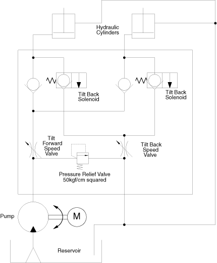

Operating Documentation
Direction 5114043-800, Rev# 9
LightSpeed 3.X Service Methods (Advanced)
Operating Documentation |
Gantry tilt is achieved by means of a hydraulic pump and 2 hydraulic cylinders. Control signals are received from the ETC-IF board. The Tilt Relay board can operate in 2 modes: system control or manual. Under system control, the tilt relay board receives tilt enable, forward and backward control signals. These signals energize either the pump motor or tilt solenoids. Under manual control, power is received from the STC power circuit, and motion is controlled manually by switch S2. Switch S1 determines system or manual control.
Gantry forward tilt requires the energizing of the pump motor. The pump increases the fluid pressure in the system, resulting in the extension of the cylinder pistons, and the gantry tilts forward.
Gantry backward tilt requires the energizing of the two (2) tilt backward solenoids. This relieves fluid pressure, and the weight of the gantry compresses the cylinder pistons. This is true for all gantry angles. Reference Illustration 1.
Speed control for both forward and backward motion is set by adjusting separate restrictor valves for 1 second per degree of motion.
The hydraulic system has a pressure relief bypass valve, which is factory set to 50 kgf/cm squared. This hydraulic system is also self bleeding.
Tilt limits are set at ± 30 degrees. Angle position is monitored via feedback of the tilt potentiometer. The feedback is sent to the table electronics, where it is digitized for gantry tilt display and prescribed remote tilt position control.
Illustration 1: Gantry Hydraulic Tilt Functional Block Diagram
